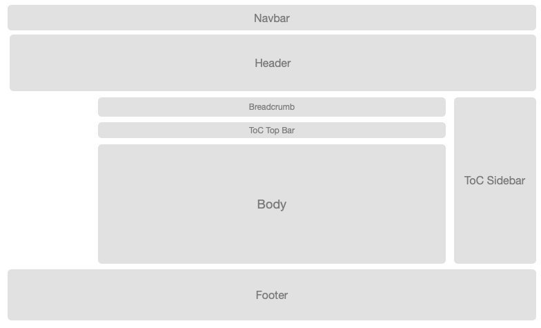

Page layout is the standard representation in Reflow skin.

The content of page is put in body container. All components around the body are customized globally or locally to this page. To customized the body itself, see Section Layout documention for more information
support v1.0
element reflow element
...
<custom>
<reflowSkin>
<pages>
<page-id project="Maven artifactId" type="page">
<!-- usage/basic.html in "my-project" project only: submodules will not inherit -->
...
</page-id>
<pages>
</reflowSkin>
</custom>
...
project attribute associates the page to specific Maven artifactId declaring in the project. This can be useful to exclude all inherit configuration on same page name localized in other module in project. Be careful that name attribute in root <project> element in site.xml is used to set the site title.page layout is default represention in Reflow skin.